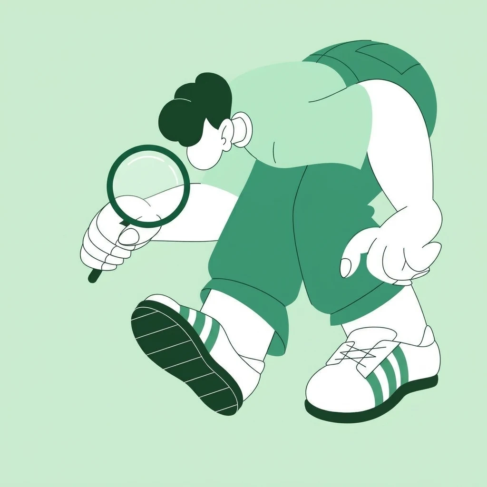

AI GUIDELINES
Learn how to use Artificial Intelligence responsibly, ethically, and transparently in your academic work.
What is Responsible AI Use?
Using AI responsibly means using it ethically, verifying its outputs, and ensuring it supports your learning rather than replacing your own effort.
Why is it Important?
It helps develop critical thinking, maintain academic honesty, and avoid the risks of misinformation from AI-generated content.
AI Guidelines
Always follow your school's specific rules regarding AI usage. If in doubt, ask your instructor before using AI for an assignment.
Disclosure
Be transparent. Always disclose when and how you used AI tools to generate or assist with your academic work.
Accountability
You are responsible for the final output. Fact-check everything AI provides and ensure it meets academic standards.
Key Takeaway
AI should be a tool to enhance your learning, not a shortcut to bypass it. Use it wisely and honestly.
UNDERSTANDING RESPONSIBLE AI
What is Responsible AI Use?
Artificial Intelligence (AI) has become a helpful tool in education, making it easier for students to research, understand lessons, generate ideas, and complete tasks. However, using AI also comes with responsibilities.
Responsible AI use means using artificial intelligence in an ethical, honest, and appropriate way. Students should understand its limitations, verify the information it provides, and make sure that AI supports their learning rather than replacing their own knowledge and effort.

Why Is Responsible AI Use Important?
Using AI responsibly helps students develop critical thinking, maintain academic honesty, and become aware of the possible risks of AI-generated information. It also encourages transparency and accountability when using AI tools for schoolwork.
Putting Responsible AI Into Practice
-
Use AI as a Learning Assistant
- AI should be used to support learning, generate ideas, explain difficult topics, and improve understanding. It should not replace a student's own knowledge, effort, and critical thinking
-
Be Honest and Avoid Plagiarism
- Students should not present AI-generated content as entirely their own work. Always make sure to understand, review, and personalize the information before submitting academic activities
-
Verify AI-Generated Information
- AI tools can sometimes provide incorrect or misleading information. Always check facts, references, and sources using reliable websites, books, or other trusted materials
-
Protect Personal Information
- Avoid sharing private information, passwords, personal records, or confidential school information when using AI tools. Always consider online privacy and data security.
-
Give Proper Disclosure
- When AI is used in completing an academic task, users should acknowledge its assistance when required by their teacher or institution. Being transparent about AI usage promotes honesty and responsibility.
-
Think Critically and Make Your Own Decisions
- Do not depend completely on AI-generated answers. Students should use their own judgment, evaluate the information, and make responsible decisions.
DISCLOSURE & ACCOUNTABILITY
KEY TAKEAWAY
Key Takeaway
- AI is a tool to support human learning, not a replacement for human intelligence, creativity, and responsibility
- Be honest in disclosure — Of course if you used AI, reference it clearly. It does not make you a bad student, hiding it does.
- Understand first before you submit — Never submit work you could not even explain if you are being asked. You are accountable for everything under your name.
- Cite everything that is not yours — Whether it is a quote, an idea, or anything that is AI-assisted content.
- Own your mistakes — If you made an error, admit it, correct it, and move forward. That shows maturity, not weakness.